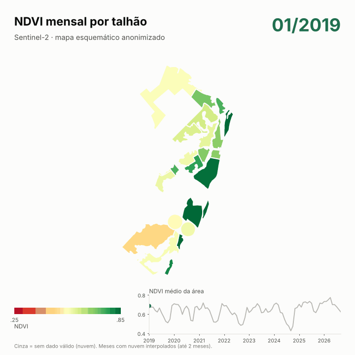
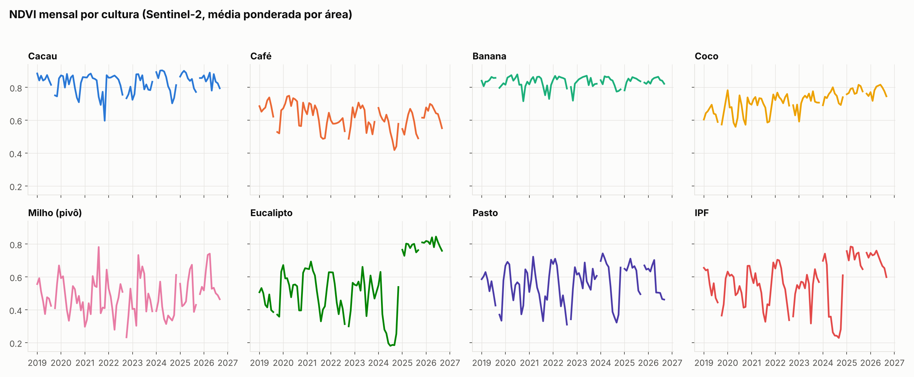
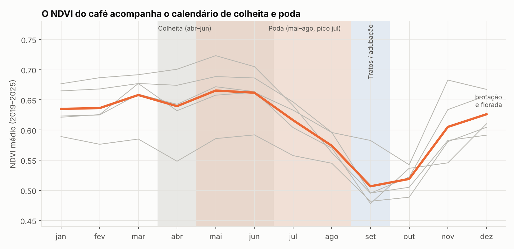
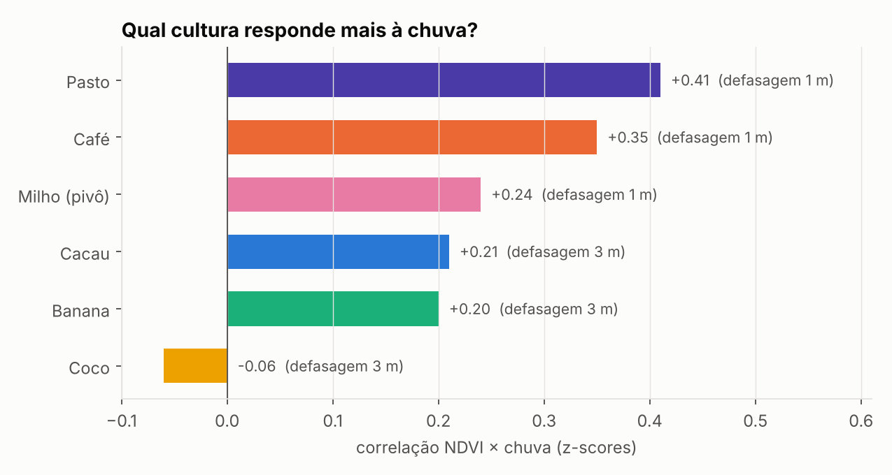

01
O satélite viu o corte do eucalipto
O NDVI caiu a cerca de 0,18 em meados de 2024 e voltou a 0,8 no início de 2025: corte seguido de rebrota. O mesmo padrão aparece no IPF.
Sensoriamento remoto · Agricultura
Sete anos de imagens Sentinel-2 em 23 talhões de 8 usos do solo, analisados com Google Earth Engine e Python: o que o satélite revela sobre manejo, chuva e cadastro de uma fazenda.
Cultivos incluídos: cacau, café, banana, coco, milho (pivôs), eucalipto, pasto e integração pecuária-floresta (IPF).
O NDVI caiu a cerca de 0,18 em meados de 2024 e voltou a 0,8 no início de 2025: corte seguido de rebrota. O mesmo padrão aparece no IPF.
NDVI no pico em maio, queda durante colheita e poda, mínimo em setembro e recuperação em novembro–dezembro, compatível com o calendário do conilon no ES.
Correlação de +0,41 com 1 mês de defasagem. Coco e banana, irrigados, quase não reagem. O café (+0,35) reflete provavelmente a poda, não a chuva.
O pasto oscila de 0,43 a 0,67 ao longo do ano; a banana quase não muda (0,78 a 0,86).
Um talhão cadastrado com 100 ha tem 146 ha mapeados (+46 %). Outros três diferem entre 13 % e 22 %.
NDVI médio mensal por cultura, ponderado pela área do talhão.




Sazonalidade do NDVI (média 2019–2025)
| Cultura | Mín–máx | Amplitude | Pico |
|---|---|---|---|
| Pasto | 0,43–0,67 | 0,24 | mar |
| Milho (2 pivôs) | 0,40–0,57 | 0,17 | dez |
| Café | 0,50–0,67 | 0,16 | mai |
| Cacau | 0,74–0,88 | 0,14 | abr |
| Coco | 0,64–0,74 | 0,10 | jul |
| Banana | 0,78–0,86 | 0,08 | jun |
Correlação NDVI × chuva
| Cultura | r | Defasagem |
|---|---|---|
| Pasto | +0,41 | 1 mês |
| Café | +0,35 | 1 mês |
| Milho (pivô) | +0,24 | 1 mês |
| Cacau | +0,21 | 3 meses |
| Banana | +0,20 | 3 meses |
| Coco | −0,06 | 3 meses |
Com cerca de 85 meses por cultura, correlações de ~0,2 mal se distinguem de ruído. Só pasto e café se destacam.
cs_cdf ≥ 0,60), composto mensal por mediana, média por talhão a 10 m.